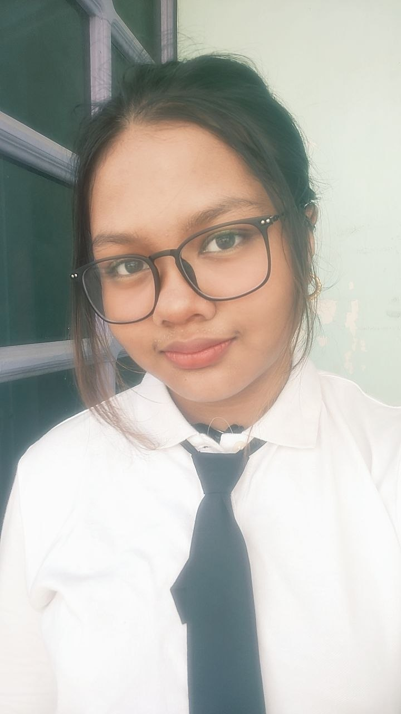

Let's see our Smartrix group members!

We created this website to raise awareness about digital inequality in education, especially in Myanmar government schools. Many students do not have equal access to technology and ICT skills, which affects their learning opportunities..
Many people in our community still face difficulties
accessing technology and digital education. Some students
do not have reliable internet connections, computers,
or smartphones to support their learning.
Others may have access to devices but lack the digital
skills needed to use technology effectively and safely.
Because of this, many students struggle to participate
in online learning, research information, and develop
important ICT skills for the future.
This digital divide can create unequal learning
opportunities and make it harder for communities
to grow and connect in today’s technology-driven world.
Our goal is to help bridge the digital divide by
promoting ICT education and improving access to
technology in our community.
We want to encourage students and community members
to develop important digital skills that can support
learning, communication, and future careers.
Through this project, we hope to raise awareness
about the importance of technology, inspire positive
changes, and create equal opportunities for everyone
to learn and grow in the digital world.
©2026 Smartrix. All rights reserved.